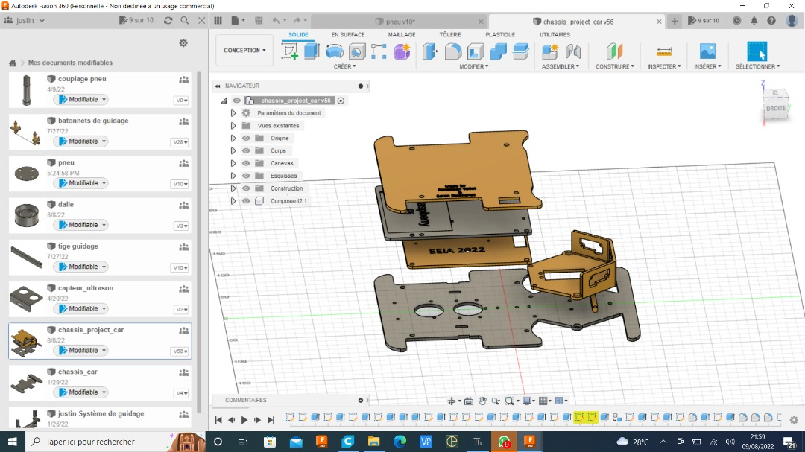
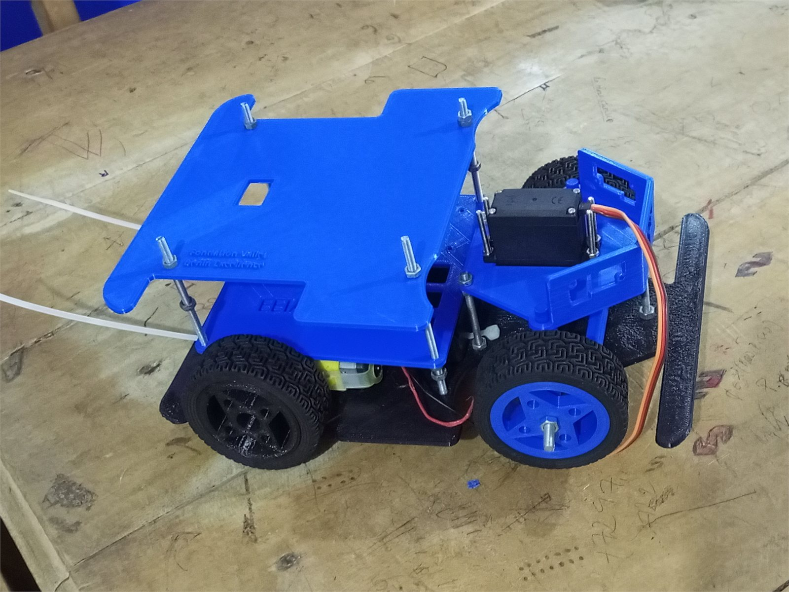
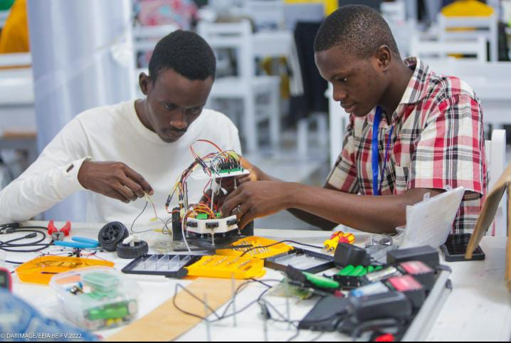
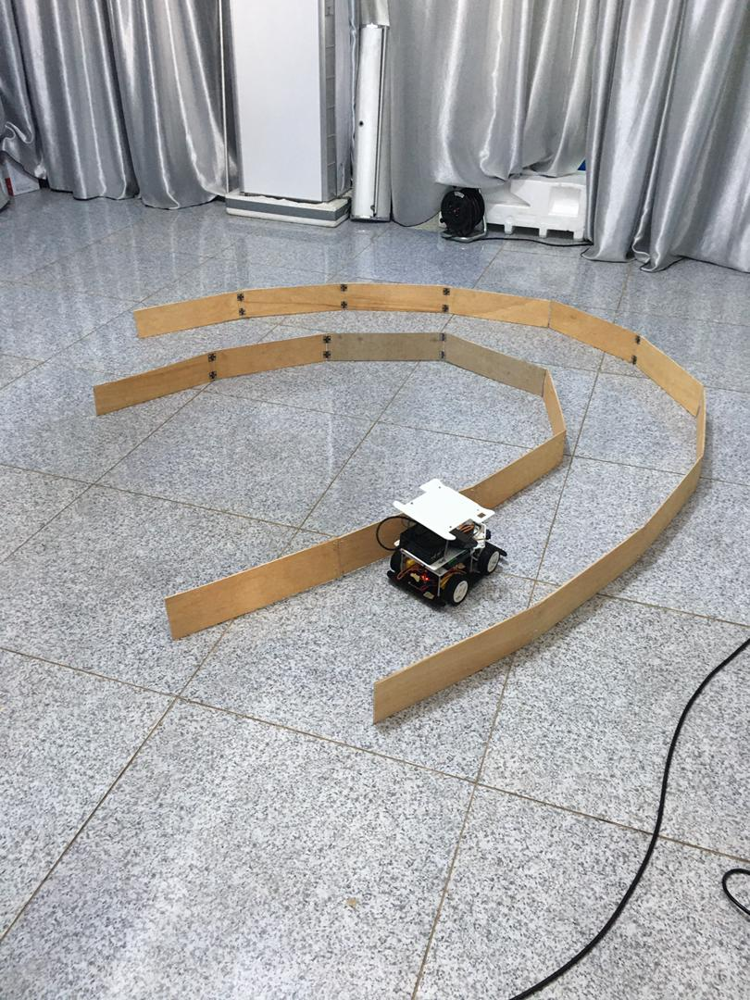
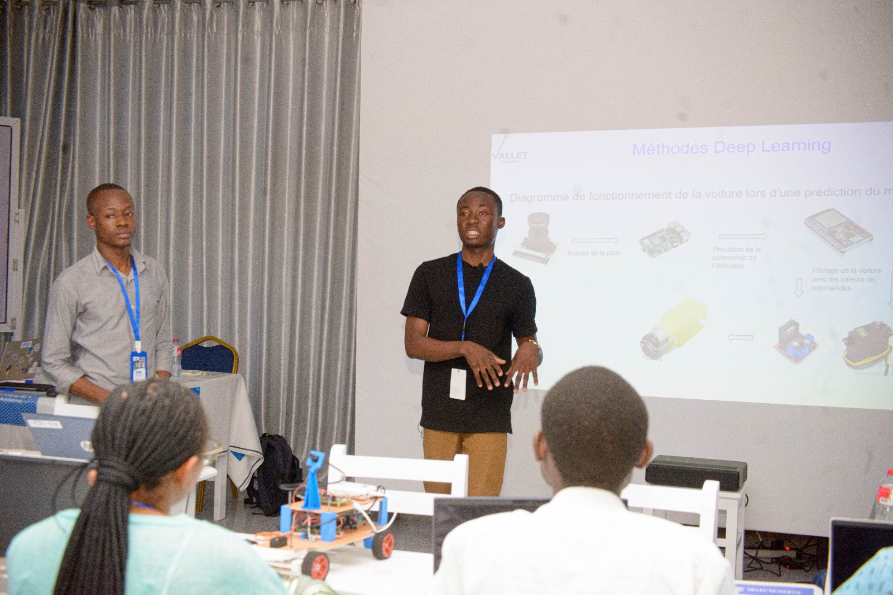
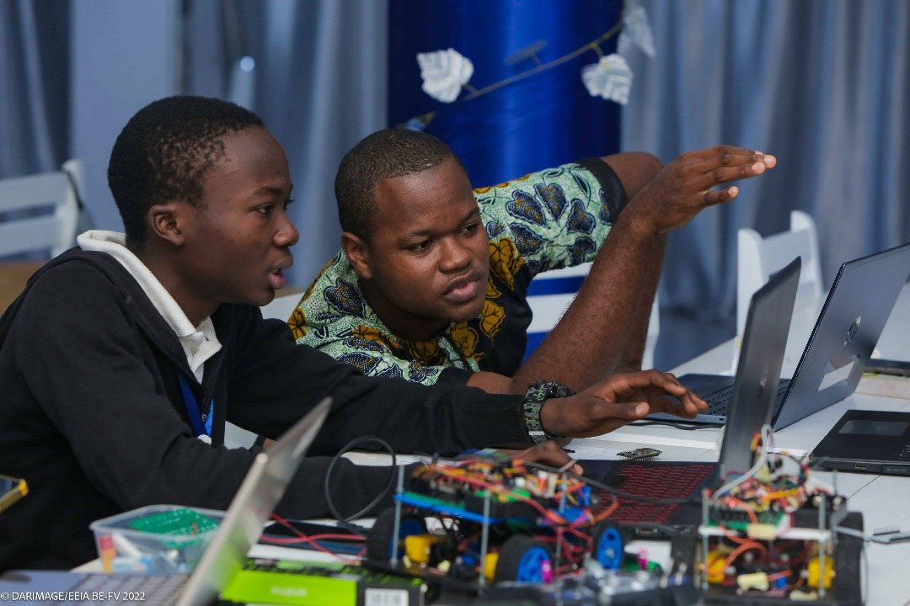

P / 04
Véhicule autonome -
Du kit à la conception de zéro

Le point de départ
En 2021, je participe à la première édition de l'EEIA. Le projet de fin de session utilise une Donkey Car de Waveshare, un kit tout prêt. On l'assemble en suivant une notice, on l'entraîne, et elle roule.
Le problème : personne ne sait vraiment pourquoi elle roule. On n'a touché ni à la mécanique, ni à l'électronique, ni au modèle. C'est une boîte noire qui fonctionne.
Monter un kit apprend à monter un kit. L'année suivante, je suis revenu avec une idée simple : pour comprendre une voiture autonome, il faut la refaire soi-même, de la première pièce jusqu'au réseau de neurones.
Tout refaire nous-mêmes
Nous abandonnons le kit. Le châssis et les pièces sont dessinés en CAO puis imprimés en 3D. L'électronique est volontairement basique : une carte ESP32, un moteur à courant continu, un L293D pour le commander, une batterie et un récepteur Flipsky.
Le résultat de cette première étape n'est même pas autonome : c'est une simple voiture radiocommandée. Mais nous savons expliquer chaque pièce, chaque fil et chaque ligne de code. C'est la base solide dont nous avons besoin pour la suite.
Étape 1: La voiture apprend en nous imitant
Nous plaçons trois capteurs de distance à l'avant de la voiture : un à gauche, un au centre, un à droite. Ils mesurent en permanence l'espace disponible autour d'elle. Puis nous construisons un circuit en labyrinthe avec des barrières en bois.
La méthode tient en trois temps :
- Je conduis. Je pilote la voiture à la main dans le labyrinthe, plusieurs fois.
- Elle observe. À chaque instant, elle enregistre ce que voient les trois capteurs et ce que je fais aux commandes.
- Elle apprend. Un petit réseau de neurones cherche le lien entre les deux : « quand les capteurs voient ça, il faut faire ça ».
Le réseau apprend ainsi à prédire deux choses : à quelle vitesse avancer, et de combien tourner. Une fois installé dans la voiture, il la conduit seul dans le labyrinthe. Elle a appris à conduire en nous regardant faire.
Étape 2: Remplacer les capteurs par une caméra
Les capteurs de distance ont une limite : ils détectent des murs, mais ne savent pas lire une route. Les années suivantes, nous passons donc à la caméra.
Un Raspberry Pi 4 vient épauler l'ESP32, et les deux cartes se parlent en UART. Chacune son rôle : le Raspberry Pi regarde et décide, l'ESP32 commande les moteurs.
Le circuit change lui aussi. Nous retirons les barrières et les remplaçons par de vraies pistes peintes sur une toile posée au sol, avec des panneaux de signalisation. La voiture ne longe plus des murs : elle doit lire la route.
Nous entraînons alors deux modèles, tous deux installés sur la voiture :
- Le premier conduit - il regarde l'image de la caméra et en déduit directement la vitesse et l'angle du volant.
- Le second lit les panneaux - il reconnaît la signalisation et adapte le comportement de la voiture.
Démonstration
Galerie






Résultats clés
- Voiture entièrement conçue par nos soins : CAO, impression 3D, électronique et code. Aucun kit.
- Conduite autonome dans un labyrinthe, apprise en imitant un pilote humain.
- Passage réussi des capteurs de distance à la caméra.
- Deux modèles embarqués : un qui conduit, un qui lit les panneaux.
- Deux cartes qui se répartissent le travail : le Raspberry Pi voit et décide, l'ESP32 commande les moteurs.
- Projet repris comme support de formation à l'EEIA pendant trois éditions (2022 – 2024).
Ce que ce projet m'a appris
Refaire ce que le kit donnait déjà nous a pris beaucoup plus de temps. C'est exactement ce qui en a fait la valeur.
Aucune de ces étapes n'était prévue au départ. À chaque fois, c'est une limite qui a imposé la suivante : la radiocommande ne suffisait plus, alors sont venus les capteurs ; les capteurs ne savaient pas lire une route, alors est venue la caméra.
C'est là que j'ai compris ce qui me passionne aujourd'hui en Embodied AI : un modèle ne vaut jamais mieux que les capteurs qui le nourrissent et le matériel qui l'exécute.
Technologies
- Python
- TensorFlow
- OpenCV
- Fusion 360
- Impression 3D
- ESP32
- Raspberry Pi 4
- L293D · Moteur CC
- UART
- TinyML